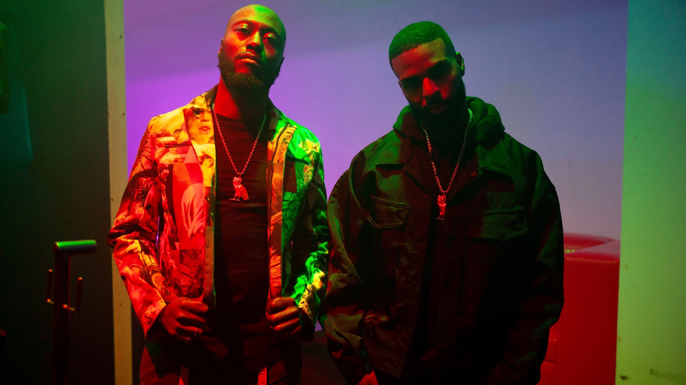
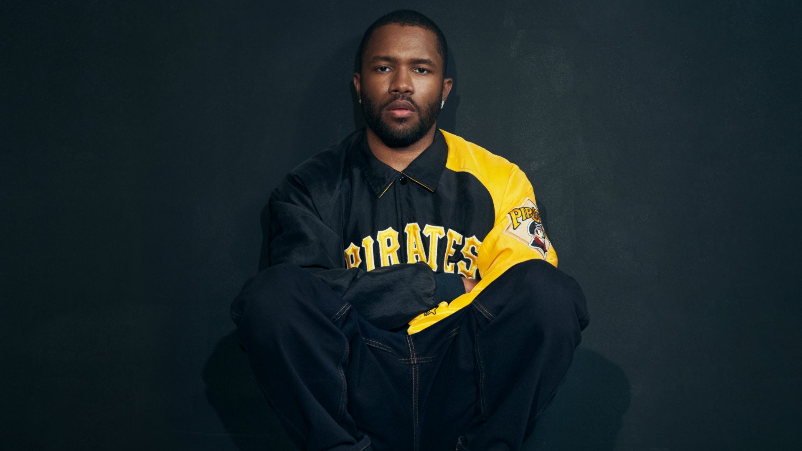

|

DVSN
|
The Weeknd
|
|---|---|
|
Kehlani
|
Daniel Caesar
|
|
Bryson Tiller
|

Frank Ocean
|
About R&B Music
Rhythm and blues, abbreviated as R&B, is a genre of popular music that originated in African American communities in the 1940s. The term was originally used by record companies to describe recordings marketed predominantly to urban African Americans, at a time when "urbane, rocking, jazz based music with a heavy, insistent beat" was becoming more popular. In the commercial rhythm and blues music typical of the 1950s through the 1970s, the bands usually consisted of piano, one or two guitars, bass, drums, one or more saxophones, and sometimes background vocalists. R&B lyrical themes often encapsulate the African-American experience of pain and the quest for freedom and joy, as well as triumphs and failures in terms of relationships, economics, and aspirations.
The term "rhythm and blues" has undergone a number of shifts in meaning. In the early 1950s, it was frequently applied to blues records. Starting in the mid-1950s, after this style of music contributed to the development of rock and roll, the term "R&B" became used to refer to music styles that developed from and incorporated electric blues, as well as gospel and soul music. In the 1960s, several British rock bands such as the Rolling Stones, the Who and the Animals were referred to and promoted as being R&B bands; posters for the Who's residency at the Marquee Club in 1964 contained the slogan, "Maximum R&B". Their mix of rock and roll and R&B is now known as "British rhythm and blues". By the 1970s, the term "rhythm and blues" changed again and was used as a blanket term for soul and funk. In the 1980s, a newer style of R&B developed, becoming known as "contemporary R&B". It combines rhythm and blues with elements of pop, soul, funk, disco, hip hop, and electronic music. Popular R&B vocalists at the end of the 20th century included Prince, R. Kelly, Stevie Wonder, Chaka Khan, Michael Jackson, Whitney Houston, and Mariah Carey. In the 21st century, R&B has remained a popular genre, becoming more pop-oriented and alternative-influenced, with successful artists including Beyoncé, Rihanna, Chris Brown, Ne-Yo, Bruno Mars, SZA, Robin Thicke, and The Weeknd.